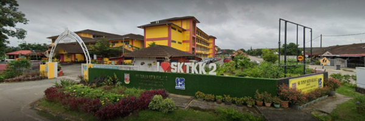
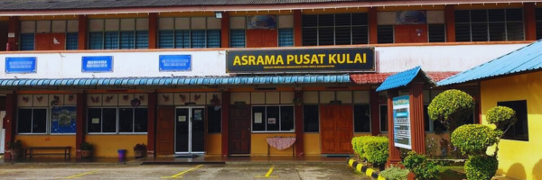

EDUCATION is a critical aspect of everyone's life. It provides people with the knowledge, skills, and experiences they need to make informed decisions, achieve success, and navigate challenging situations. Education not only promotes personal growth and development, but also opens doors to many opportunities, such as job opportunities, and continued learning. Therefore, education is vital to our personal and societal success. Below is my educational history for my entire life.
MY KINDERGARTEN | TABIKA PERPADUAN
This is my early education. It is called 'Tabika Perpaduan'. I went there for about 2 years when I was 5 and 6 years old. I had fun there because the teachers are kind and patient. I only got one friend when I was in the kindergarten. Her name is Qistina.
MY PRIMARY SCHOOL | SK TAMAN KOTA KULAI 2
After I graduated from kindergarten, I went to the next education which is Sekolah Kebangsaan Taman Kota Kulai 2 known as SKTKK 2, I spent 6 years there from my age 7 years old until 12 years old. When, I was in Year 6, we got this examination called UPSR. I got 4A1B1C in that examination. I am so proud of myself as my name got called to go on the stage. I was one of the admirable students in my year at that time.
MY HIGH SCHOOL | SMK TUNKU ABDUL RAHMAN PUTRA
After I graduated from primary school, I went to the next education which is Sekolah Menengah Kebangsaan Tunku Abdul Rahman Putra known as STARP, I spent almost 6 years there. When I studied here, I live at the hostel called Asrama Pusat Kulai (APK).
Me at STARP!
HOSTEL | ASRAMA PUSAT KULAI
This is my hostel, a place where I have spent almost 6 years of my life, filled with memories of fun and friendship. This is where my friends, who I consider to be like family, and I would spend hours together, doing everything from eating, playing, and studying. We were inseparable, and we always had an amazing time together. In my last year, I was even fortunate enough to become an exco, which only made the experience even more rewarding and fulfilling. Thinking back on those days, it just fills me with nostalgia and joy. This hostel will always hold a special place in my heart and I am truly grateful for those amazing years that I spent here.
Me at APK with my friends!